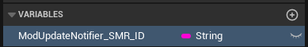
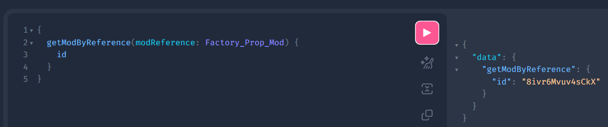
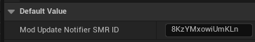
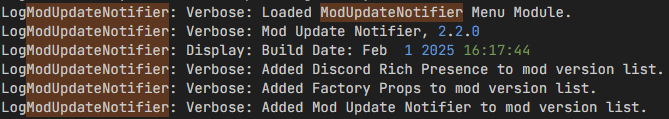
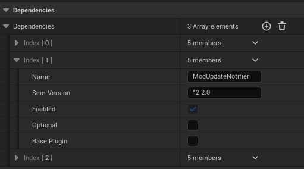
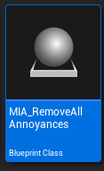

Mod Update Notifier
This page is intended as a guide for developers to show how to implement Mod Update Notifier into your own mods. If you have a question about anything covered here, please ping spacegamedev on the Satisfactory Modding Discord server for help.
If you are upgrading from v2.1.x of Mod Update Notifier, please read the "Upgrade Guide: v2.1.x" section
Getting started
Implementing Mod Update Notifier is very simple. If you haven't already, create a Blueprint Class of type MenuWorldModule. Next, add a variable called ModUpdateNotifier_SMR_ID of type String and compile the Blueprint.

To get your mod's ID, go to https://api.ficsit.app/v2 in your browser. In the left panel, you'll see a bunch of commented out stuff, which you can delete. Next, copy and paste this query command into the input field:
query { getModByReference(modReference:Factory_Prop_Mod) { id } }
Make sure to replace Factory_Prop_Mod with your mod reference.

Click the pink play button in the center to run the command. Now you should see a result in the right panel that looks something like this:
{ "data": { "getModByReference": { "id": "8ivr6Mvuv4sCkX" } } }
with the ID value being unique to your mod. Copy the string from the "id" field and paste it into the Default Value field of your ModUpdateNotifier_SMR_ID.

Save and compile your work. Your mod should now automatically be registered by Mod Update Notifier when the game starts!
Verifying that your mod works
You can verify that it's working by launching the game and looking at the log. Search for ModUpdateNotifier until you find the build info, which will list the detected mods below:

If you do not see your mod in the list, go back and re-read the instructions for how to set it up.
Optional: Automatically install MUN alongside your own mod
You can optionally have SMM automatically download and install Mod Update Notifier when your mod is installed or updated. To do this, you will need to add MUN as a dependency for your mod in Alpakit. Note that this will also require MUN to be installed alongside your mod, otherwise SML won't allow the game to launch.
Open the Unreal Editor if you haven't already, and click the Alpakit Dev button.

Next, click "Edit" on the mod for which you wish to implement Mod Update Notifier functionality. Scroll down to the "Dependencies" section and click the plus icon to add an element. Set the name of this element to ModUpdateNotifier and the "Sem Version" to ^2.2.0 or whatever the latest version is (Make sure to include the caret ^ at the beginning to allow newer versions of MUN as it is updated). Leave "Optional" and "Base Plugin" unchecked.

Upgrade Guide: v2.1.x
If you're upgrading from the 2.1.x version of MUN, please follow the instructions below.
Open your Menu World Module and delete the SpawnActor node. You can also remove the Event On Lifecycle Event and Switch on ELifecyclePhase nodes if you're not using them for anything else.

Now you can safely delete your MIA_YourModName Blueprint Class, as this is no longer needed.

Continue with the "Getting Started" section, as that will cover everything else about the upgrade process.